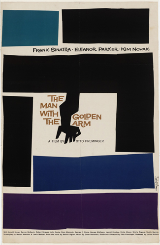
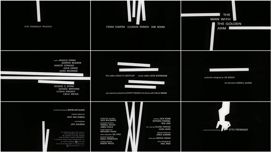
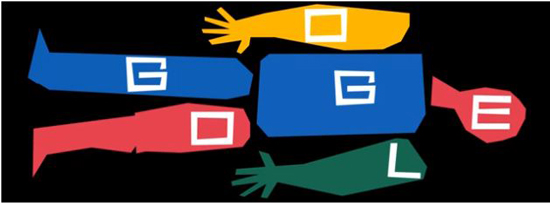

Saul Bass
Did Saul Bass revolutionize design in film?
Saul Bass is an internationally recognised designer both in graphic design and in the film industry. Bass did a lot of famous work and left his stylistic mark, but did Saul Bass revolutionize design in film?
Background

Saul Bass was an American graphic designer and Oscar winning filmmaker, born on May 8th, 1920 in New York City that would then go onto introduce a new art form to the world using movie title sequence. Even at a young age Bass was apparently highly creative and drew constantly. Bass attended the Arts Student League in New York once he had finished high school, after he then took night classes at Brooklyn College, where he had the chance to study under György Kepes, a famous designer and master of the Bauhaus style.
In the 1940's Bass left New York to move to Los Angles where he started up his own practice in 1952 and eventually Bass established s private firm named Saul Bass & Associates. While in Los Angles Bass works as a graphic designer in advertising until 1954 when he got his big break, job offer from filmmaker Otto Preminger to design a poster for the film "Carmen Jones". The poster that Bass created was so loved by Preminger, that Bass was also asked to create the title sequence for the film as well. With this new opportunity Bass realised the potential that was present and that he could create something great that set the correct atmosphere and theme for the films. In an interview Bass said that he had felt that “audience involvement with a film should begin with its first frame” (no date, Bass). Whereas before Bass's input, title cards were static and dull, they had seen as being unimportant, so no attention was paid to them.
By 1958 Bass was one of the most famous graphic designers in the world. He worked with various filmmakers such as Alfred Hitchcock, Stanley Kubrick, Otto Preminger, Billy Wilder, and Martin Scorsese creating film posters and title sequences for many movies, some of which are classics in today's world.
Even though Saul Bass is mainly known for his work in the film industry, he designed a great deal of other things such as album covers, ceramic tiles, logos, buildings and service stations. A book about his work called Saul Bass: A Life in Film and Design was released 15 years after his passing in 1996.
Logos
Between 1970 to 1986, Bass decided to take a break from working on films, to go back and visit his design roots. During this time Bass created some of the most iconic logos for large corporations, such as the Bell Telephone logo (1969), Dixie (1969), Continental Airlines (1968), successor AT&T globe (1983) and United Airlines (1974).
The logos that Saul Bass created would averagely last for 34 years, before being changed or updated but some of the ones that Bass designed are still present in today’s world and are yet to be replaced by the company they were made for which shows how Bass’s creations are timeless and iconic as they have stood the test of time.
Bass once quoted that logo design should “Symbolise and Summarise” (Bass, no date), following this point of view Bass was able to create logos that capture the essence of the company and represents it in the best was possible. For example the AT & T logo is simplistic as it is just a blue circle with white lines but when you take a closer look, the blue circle with white lines that was previously ignored begins to resemble a globe/emblem. This is the perfect way to symbolise what AT & T is as they are a global mobile network company.
Vertigo

A film by Alfred Hitchcock, Vertigo was another movie that Saul Bass did design work for. Bass offered Hitchcock a package deal which would consist of many different iterations of the designs for the film
The Vertigo poster design was established with only three colours (orange, black and white) and the hand-cut lettering against the bright orange background. Bass also used close up images of the two main actors from the film for some of his designs. Bass’s work appears abstract but still lets the viewer know what the film is about, he can say a lot through the poster without overloading it, that is a skill that can take years to master. “Design is thinking made visual.” (no date, Bass) is something that Bass has shown throughout his work.
Bass’s creative process for Vertigo shows us that inspiration can come anywhere as while in a book store one day, he was fascinated by the spiralling images that he had come across within a book. Bass then began to experiment with the design while trying to replicate the spirals. “I made a batch. Sat on them for years” (no date, Bass), Bass stated, and then once he was asked to work on Vertigo he finally knew how to put the spirals to use. This goes to show how anything can lead to something great, “making the ordinary extraordinary” (no date, Bass) as Bass claimed.
Golden Arm
Bass also a title sequence for the man with a golden arm. The film was adapted from a novel about drug addiction, Bass was able to create a symbol that perfectly enlightened the viewers about the subject of the film while also setting the mood and theme for it. The symbol Bass designed appears to be an abstract arm that is distorted and fragmented, the arm seems as if it had been poked by needles and filled with drugs. Bass stated that “The intent of this opening was to create a mood spare, gaunt, with a driving intensity… [that conveyed] the distortion and jaggedness, the disconnectedness and disjointedness of the addict’s life the subject of the film.”(no date, Bass)
The symbol is a reminder that good design can still be simple yet effective. A message can be conveyed through design as it does not have to be written in order for the viewers to be able to understand it.
Bass had a talent for reducing movies to their bare essence and depicting that through the use of white and black lines and in some instances adding a bold splash of colour. This can be seen through how in The Man with the Golden Arm, the fragmented arm is painted completely black and the rectangles placed around it are also mainly black except for the blue and purple one for added effect.
Within the title sequence for The Man with the Golden arm, lines are used to display the important names relating to the film. Bass uses positive and negative space creatively and intelligently to create the seamless sequence. I believe by using positive and negative space it allows the viewer to form their own opinion and views from the images that they are seeing.
Bass used his creative freedom to blur the lines of what was considered design at that time. The viewers were not told what to think but instead shown what to feel through his striking art work.
Impact
Filmmaker Scorsese described Saul Bass as “a person who found and distilled poetic of the modern industrial world” (no date, Scorsese) because of how innovative Bass was and how his unique perspective of the world shed his work.
Bass has not only left an impact on the world but has also impacted and influenced young designers. They now also push the boundary and think more innovatively when it comes to what can be done with posters and film credits. Bass’s influence was so inspirational that Tumblr gatherings and Pinterest boards were made to share and discuss Bass’s work.
Bass was also regarded as a major influence for Bernard Lodge, a famous graphic designer that worked for the BBC designing logos and title sequences for the famous British series Doctor Who.
On Bass’s birthday (May 8th) Google even changed their iconic logo to an interactive doodle, that was influenced by Bass’s work within the film industry.
Conclusion
During his time Bass managed to work with some of the biggest film makers in the industry within that period. Bass was also able to create 100’s of movie posters and several of the most identifiable and lasting logos for corporations.
Saul Bass did revolutionize design in the film industry. He made it what it is today and showed us what was possible. Bass took something that was ignored by everyone and gave it new life and because of that design in the movie industry has been changed forever. What Bass achieved is best summed up by this final quote by him
“I want to make beautiful things, even if nobody cares.”
(no date, Bass)
That is exactly what Bass ended up doing but instead of nobody caring about his work, Bass managed to create a new form of art and change design in the film industry forever.
Bibliography
Author - Zachary Petit PrintMag
Author - Unknown Famous Graphic Designers
Author - The Academy Art&Science
Author - Alex Bigman 99Designs
Author - Unknown Art of the Title, The Man with the Golden Arm
Author - Unknown IMDB